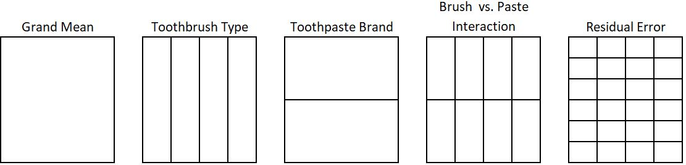
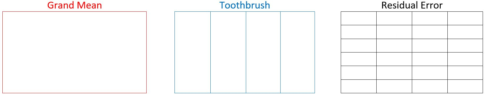
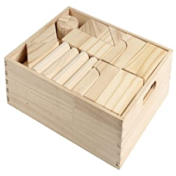

| PersonID | Brush | Plaque |
|---|---|---|
| 1 | Ultrasonic | 32.74 |
| 2 | Manual | 24.21 |
| 3 | Oscillating | 22.09 |
| 4 | Manual | 21.6 |
| 5 | Ultrasonic | 21.45 |
| 6 | Sonic | 23.31 |
| 7 | Oscillating | 19.87 |
| 8 | Sonic | 23.81 |
| 9 | Manual | 19.12 |
| 10 | Manual | 23.4 |
| 11 | Ultrasonic | 24.39 |
| 12 | Ultrasonic | 23.42 |
| 13 | Sonic | 21.27 |
| 14 | Oscillating | 20 |
| 15 | Oscillating | 18.56 |
| 16 | Manual | 26.88 |
| 17 | Ultrasonic | 24.21 |
| 18 | Sonic | 25.58 |
| 19 | Manual | 23.35 |
| 20 | Oscillating | 17.62 |
| 21 | Sonic | 18.99 |
| 22 | Ultrasonic | 25.67 |
| 23 | Sonic | 23.09 |
| 24 | Oscillating | 21.72 |
Factor Structure
In this section you will learn about factors in context of analyzing results of an experiment:
- How to identify factors
- A method for diagramming factors. This method for diagramming factors should help provide a more visual understanding of how the design is related to the analysis of an experiment
- A vocabulary to describe how factors are related to one another.
Identifying and Diagramming Factors
To begin, consider a particular example. Researchers were interested in comparing the effectiveness of certain types of toothbrushes: Manual, Oscillating, Sonic and Ultrasonic. Twenty-four people were recruited to participate in the study. Each person was assigned to use one of the 4 toothbrush types. After using the toothbrush, the total percent surface area of the teeth with plaque for each person was recorded. Here are the data.
When analyzing our data we will want to compare the averages for each toothbrush type. We can group observations together that used the same type of brush and then calculate the average of the group. The figure below shows observations for each type of toothbrush grouped into columns.
To compute the mean for the manual toothbrush I would sum together the observation for manual and divide by 6 (the number of pieces information in that factor level):
\[ \bar{y}_\text{manual} = \frac{19.12 + 24.21 + 26.88 + 21.6 + 23.4 + 23.35}{6} = 23.09 \qquad(1)\]
I can likewise compute the mean for the other factor levels and display them:
We can think of a factor as a meaningful way of grouping, or partitioning, the data set. Of course, there are many, many more ways I could have grouped the observations; but the averages of those groups would not result in anything meaningful.
Factors and Factor Levels
Each unique way of partitioning the data set into meaningful groups of observations is considered a factor. Each individual partition (or group) is a factor level. In a given factor, each observation belongs to exactly one group.
The column orientation is not considered a distinct factor from a row-wise grouping (shown below) since the method for drawing the partitions is the same: splitting by toothbrush type. The key is that after choosing an orientation (row vs. column) you should be consistent in how you represent it throughout your analysis.

Factors in Design vs. Analysis
It is important to note, that use of the word “factor” here is different from (albeit related to) the way it is used in the principles of experimental design section of the book. In that section of the book the variables that are purposefully varied and assigned to subjects are referred to as factors. That section of the book deals strictly with design. But when doing the analysis of the resulting data, this new definition of factor (a meaningful way to group observations) is used. Later we will formally define a mathematical model to aid in our analysis. In our model, each of these analysis factors will be represented by a separate term in the model. Thus, some of the confusion may decrease because we can refer to terms in a model and reserve the word “factor” primarily to refer to an experiment’s design.
Remember that in this example, a lower number represents less plaque; and so a lower number is interpreted as better. The oscillating brush has the lowest mean of the plaque measurement.
When more than one variable is manipulated in an experiment we will have multiple ways to meaningfully group observations. If, in addition to toothbrush, we wanted to simultaneously assess the impact of two different brands of toothpaste, our data set could look like this:
| PersonID | Brush | Toothpaste | Plaque |
|---|---|---|---|
| 1 | Ultrasonic | NameBrand | 32.74 |
| 2 | Manual | NameBrand | 24.21 |
| 3 | Oscillating | OffBrand | 22.09 |
| 4 | Manual | OffBrand | 21.6 |
| 5 | Ultrasonic | NameBrand | 21.45 |
| 6 | Sonic | NameBrand | 23.31 |
| 7 | Oscillating | NameBrand | 19.87 |
| 8 | Sonic | OffBrand | 23.81 |
| 9 | Manual | NameBrand | 19.12 |
| 10 | Manual | OffBrand | 23.4 |
| 11 | Ultrasonic | NameBrand | 24.39 |
| 12 | Ultrasonic | OffBrand | 23.42 |
| 13 | Sonic | OffBrand | 21.27 |
| 14 | Oscillating | NameBrand | 20 |
| 15 | Oscillating | NameBrand | 18.56 |
| 16 | Manual | NameBrand | 26.88 |
| 17 | Ultrasonic | OffBrand | 24.21 |
| 18 | Sonic | NameBrand | 25.58 |
| 19 | Manual | OffBrand | 23.35 |
| 20 | Oscillating | OffBrand | 17.62 |
| 21 | Sonic | NameBrand | 18.99 |
| 22 | Ultrasonic | OffBrand | 25.67 |
| 23 | Sonic | OffBrand | 23.09 |
| 24 | Oscillating | OffBrand | 21.72 |
In this new example, two different variables are randomly assigned to subjects. This means there is more than just one meaningful way to group, or partition, the observations.
Though we only varied 2 variables in the experiment (toothbrush and toothpaste) there is a third way to group observations that will lead to insightful means. In other words, a less obvious, hidden factor exists. This third factor is a grouping of observations by the combination of toothbrush and toothpaste. This is called an interaction factor. Stated more generally, an interaction factor can be obtained by grouping observations by factor level combinations.
So far, we have identified 3 factors for analysis: toothbrush type, toothpaste brand, and their interaction. There are two other meaningful ways to group the observations. These two factors are present in all designs and are given special names: the grand mean and the residual error.
The grand mean factor is a result of grouping all observations together in one. The grand mean factor has just one level. The grand mean’s value is, unsurprisingly, the mean of all the data points together.
At the other extreme, you may be interested in comparing individual datapoints. In this case, each observation belongs to its own group. The mean of each data point is simply itself. This grouping is referred to as the residual error factor. The number of levels of the residual error factor is equal to the number of observations in the dataset.

Because the grand mean and residual error factors are present in all designs, they are referred to as universal factors. The factors for toothbrush type, toothpaste and their interaction are called structural factors. Because the structural factors are the result of the variables you deliberately vary in your experiment they are helpful when comparing designs. Changing your design will change the make-up of your structural factors.
Danger
The way of organizing data that is taught here and used throughout the book is NOT how you will want to layout/structure your data for analysis using software or even for recording/collecting data. The purpose is to facilitate understanding of how the design relates to the analysis and how the mechanics of an ANOVA model work.
Describing Factor Relationships
A factor structure for an experimental design can help provide an effective way to plan for and organize the data in an experiment. Having a factor structure can help us determine the degrees of freedom and the effects of each factor. Factor effects and degrees of freedom are key components in an analysis of variance and are explained in more detail in the ANOVA and the F-test page under “Broad Topics”. Don’t worry if you don’t know exactly what they mean yet. For now it is enough to know that identifying how factors are related to one another and using factor diagrams will allow us to come up with simple, general rules for calculating these quantities later on.
Each factor can either be inside of, outside of, or crossed with another factor. (A factor can also be nested within another factor, but we will save that explanation for the Split Plot/Repeated Measure design).
Inside and Outside
Think about our toothbrush example, but ignore toothpaste for a moment. If toothbrush is the only treatment under scrutiny we have three factors in the analysis: the grand mean, toothbrush type, and the residual error.
Recall that in the simplest version of the toothbrush experiment there were 4 levels of the treatment (toothbrush type), with six replicates for each toothbrush. In the following factor structure diagrams grand mean is represented in red, toothbrush type is drawn in blue, and the residual factor levels are depicted in black.

A factor is inside of another factor if all the levels of one factor (the inside factor) completely fit within a second factor (the outside factor).
You may find this analogy helpful. Pretend that an outside factor is a box, and the inside factor levels are blocks that fit neatly within the box.

To determine if a factor is inside another factor, imagine picking up the levels of the factor one by one and placing them inside the other factor. If they all fit without crossing the partition lines of a factor,then it is considered inside.
This is illustrated with the toothbrush example. We will start by taking the levels of toothbrush and placing them inside of grand mean

In the figure above you can see that one entire level of toothbrush can fit inside of a single level of benchmark. Even though they may share a boundary line, the toothbrush level does not cross over any lines or start sharing boundaries with any other level of benchmark (this is of course impossible since benchmark only has one level). You can repeat this for the other 3 levels of toothbrush with the same result. Therefore, we say that toothbrush is inside of benchmark, which is the same as saying that benchmark is outside of toothbrush.
Consider now the relationship between toothbrush and residual as shown below. If we take a level of toothbrush and overlay it on the residual factor, we can see it does not fit neatly inside one of the levels of residual error. In fact, one level of toothbrush crosses the boundaries of many of the levels of residual error. Therefore, we cannot say that toothbrush is inside of residual error.

Since toothbrush is not inside of residual error, does this necessarily mean that toothbrush is outside of residual error? No! This is something that has to be checked. To determine whether toothbrush is outside of residual we must take the levels of residual error one at a time and overlay them on the toothbrush factor structure, as shown below. You can see that one level of residual error does NOT cross any of the toothbrush level boundaries. Therefore, toothbrush is indeed outside of residual error; or equivalently, residual error is inside of toothbrush.

Let’s pause here to clarify a common misunderstanding. Consider an experiment where we are looking at the inside vs. outside relationship of two factors: A and B.
- When factor A is inside of factor B, we can also say factor B is outside of factor A.
- But, when factor A is not inside of factor B, this does not necessarily mean that factor A is outside of factor B. There are situations where two factors are neither inside nor outside of each other; they are crossed.
Crossed Factors
Two factors are crossed when their partition lines cross in a way that creates new groups of observations that represent every possible combination of the factor levels. More succinctly stated, factors are crossed when all factor level combinations are present in the study. We see this type of relationship in the toothbrush study with two controlled factors: toothbrush type (4 levels) and toothpaste brand (2 levels). Toothbrush and toothpaste are neither inside nor outside of each other; rather, they are crossed.
The crossing of toothpaste brand and toothbrush created an interaction factor.
When two factors are crossed, the resulting (interaction) factor’s levels will always be inside of each of the factors that was crossed to create it. This fact is illustrated here for the toothbrush factor and could similarly be shown for toothpaste brand factor.
General Rules
At the beginning of this section I mentioned that understanding inside and outside factors would help us arrive at a general rule for calculating effect sizes and degrees of freedom. We have not yet defined an effect size or degree of freedom so the following general rules may not mean a lot to you now. However, you will find them quite helpful later. The section on Effects Model and ANOVA will help explain why these rules are true; but for now, you will have to take it on faith.
General Rule for Effect Size
\[ \text{Effect Size} = \text{Factor level mean} - \text{sum of effects of all outside factors} \]
General Rule for Degrees of Freedom
\[ \text{Degrees of freedom} = \text{Total levels of a factor} - \text{sum of degrees of freedom of all outside factors} \]